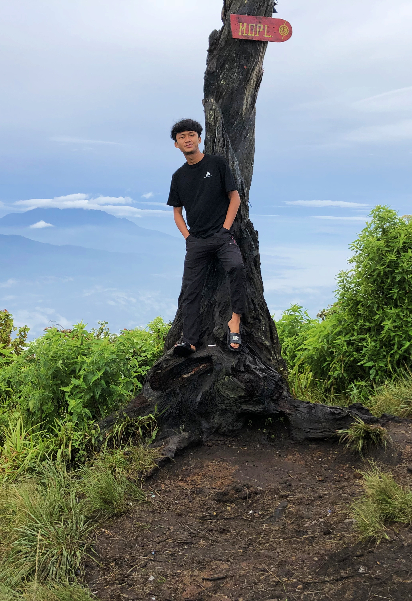

| IDZA RAMAULKM. | Home | Experience & Education | Contact |
Hi, I'm IDZA.
Student of Informatics Engineering
Institut Technologi of Sumatera
students with high enthusiasm in solving problems
|  |
Seorang lulusan SMK Negeri 2 Kalianda dengan jurusan Teknik Komputer dan Jaringan yang berkompeten di hardware komputer dan internet dan lokal
|